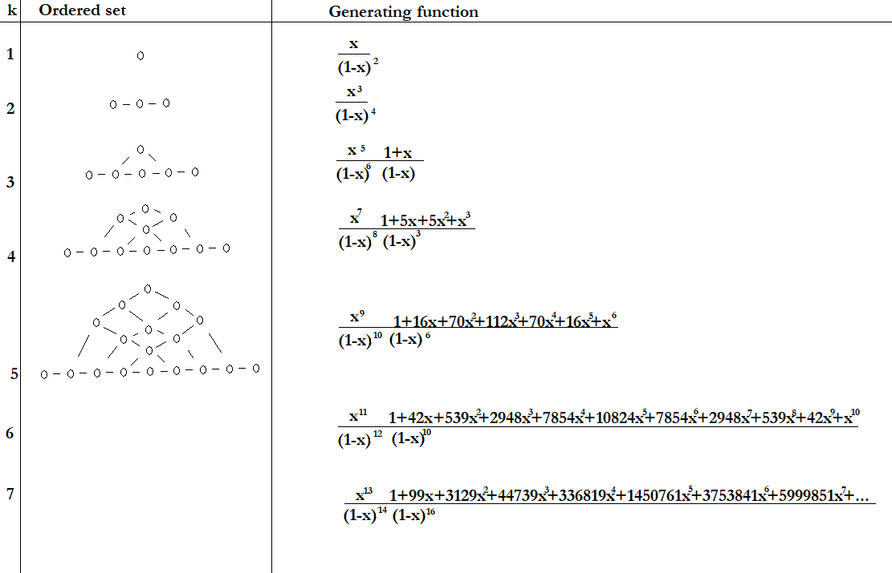

Research
Preprints:
Consider a poset P and it's order polytope Q. The Ehrhart h* series of Q can be described as the generating series whose n coefficient says the number of labelings of P with numbers from 1 to n, preserving order. That is, the n coefficient is Stanley's order polynomial evaluated at n. Anh Nguyen and Amanda Yitong Zou computed the following table:
|  |
| Left colum: posets, right column: order series |
Projects:
Currículum para una clase de ética en inteligencia artificial para estudiantes de secundaria. (Traducción al Español junto con Antonio Arciniega Nevarez y Mariana García Prince)
Worked as organizer of the 2019 EBook “ Machine Learning For Humans” at the Department of Scientific Computing at FSU.
Consultation with the Department of Geography at FSU: Organized and hosted bimonthly meetings to discuss possible ML projects with geographical data.
“Associators, Formality and Invariants” Seminar at Northwestern University. I have spent time learning about; non-commutativity and analysis with Dr. Shapiro Fishman, Homotopy and categories with Dr. Lupercio Lara, and Operads with Dr. Dmitry Tamarkin. I am intrigued by the theory of Drinfeld associators, so I organized a seminar called “Associators, Formality and Invariants” where I talked about EK-quantization of Lie bi-algebras, Homotopy Gerstenhaber algebras and formality, among other topics. Below are some notes from the seminar.
Notes from Dr. Licata's course: Braid group actions from representation theory).
My own notes on A infinity algebras.
My own notes on Genus-zero TQFTs and operads from the seminar on: Reshetikhin Turaev Invariants.